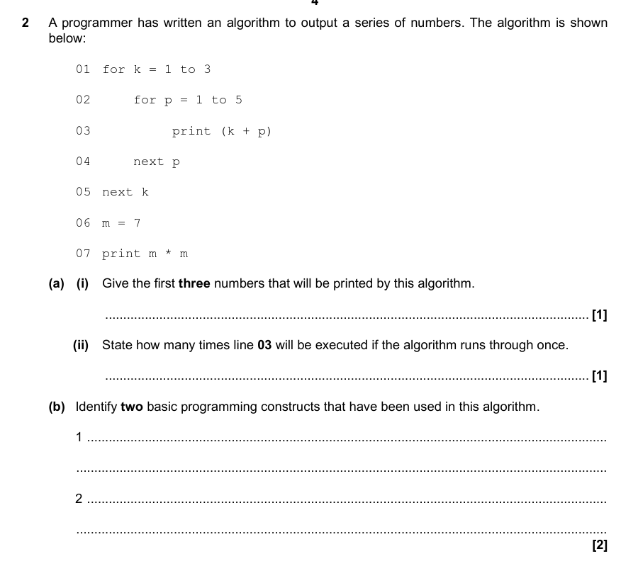
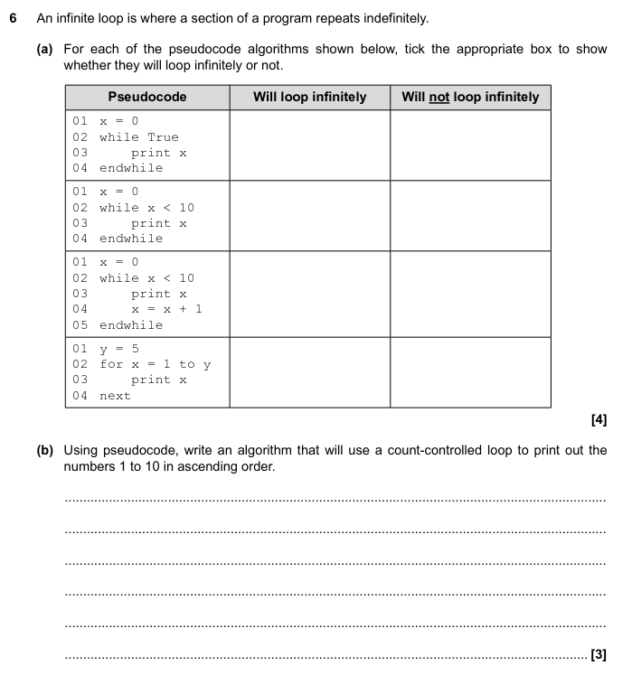
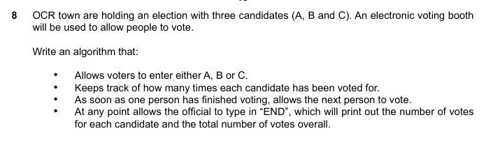

Press s for speaker notes
Puts is just print in this context
x = 10 puts(10) x = 20 puts(x)
10 20
something = false if something == true "something is true" else "something is false" end
something is false
something = false if something == true "soemthing is true" elsif something == nil "soemthing is nil" else "something is false" end
something is false
something = 3 case something when 1 "something = 1" when 2 "something = 2" when 3 "something = 3" end
something = 3
condition = true; count = 0; while condition != true { // this loop will never run if (count != 10) { count += 1; } else condition = true; } print("count =", count)
count = 0
do { if (count != 10) { count += 1; } else condition = true; } while condition != true; print("count =", count)
count = 1
lst = [1, 2, 3] for i in 0..3 puts lst[i] end for i in lst puts i end
1 2 3 1 2 3
x = 1 + 1 y = 2 > 1 z = Math.sqrt(4) [x, y, z]
| 2 | true | 2.0 |
def in_array?(array, to_find) for i in array if i == to_find return true end end return false end lst = [1,2,3] x = in_array?(lst, 3) y = in_array?(lst, 4) [x, y]
| true | false |


